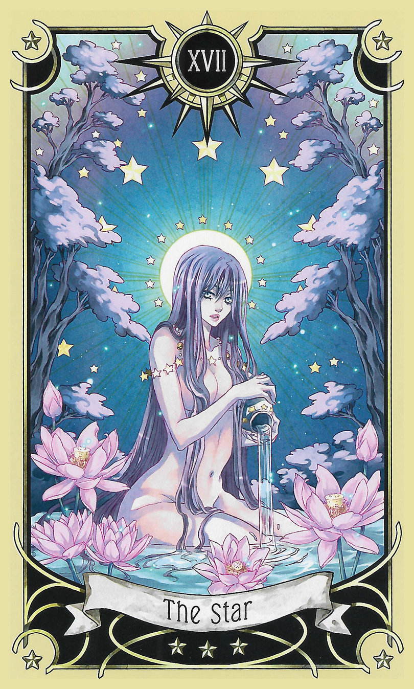

93 - Visioneers
A picture in the center of my vision shows a man with fifties-style Guy Hair and a salt-and-pepper mustache. Beside his head a screen appears with video, pictures of his childhood, there's a wooden duck rolling on a string--holy fuck who is this!?
"Working with your eyes closed, travel to New Guinea on Earth and help implant Walt Disney."
There's a flash of light to show we're done, the start of level sound, and as it all fades out again the announcer says "good luck" to us.
Journey grabs us, and we're in the dark together.
Okay but what, I thought, I mean I guess Walt isn't un-related here but--AAAH holy glowing laser rings no time! Panther eyes glare at us out of the darkness, so I bring my light up nice and bright--oops, not that bright. We seem to be in a jungle, not anime, and the panther that was glaring bolts when I blow its night vision out for the next five years. The jungle is dense. Bright light just shows leaves and trees close around us.
"What is that light?"
A sort of radio-announcer voice comes from behind us--oh, hi Walt!
Yeah you don't need your electric lantern now, I've got it.
Gasp how'd we get here what is happening!? It's real Princess Acme Station says it's Earth in nineteen twenty five!
"That was me. I had to scare a panther."
Wait--bwahahaha don't laugh don't laugh okay sticky jolly rancher slippers this is why we never plan these things. Good one Dreams.
I flumph my wings out, make them nice and colorful-bright, smile with the sheer stupid epicness of this, and stick my hand out to shake.
"HI! I'm your fairy godmother."
He snaps a picture no-one will ever in a million years believe with the huge camera around his neck, scrolls the film advance, snaps another one, puts the camera down and takes my hand, but kisses it (on the back of the fingers, unlike Mama) instead of shaking, lets my hand go.
"You're not actually a fairy, can you be? What's your trick for lighting?"
He shakily pats himself looking for something, finds a pack of cigarettes, starts looking probably for the lighter.
"Need a light?"
He looks relieved and puts a cigarette to his lips and I very carefully zap the end of it with a thread of rainbow-flickering laser from my fingertip that'll be visible in the steamy jungle but hit so any scatter doesn't find his eyes.
His eyes cross to see what I'm doing, then the cigarette bursts into flame and I stop lasering it and he takes it away from his mouth and stares. Hehe it's 1925 you can't even pretend I've got a laser diode up my sleeve!
"My trick is I'm a real fairy and that's real fairy magic. So's my being here to save you from that panther. I'm Princess Lucy Starlight, and this is Lyra. Say hi to Walt, Lyra."
"Hi Walt Disney, very pleased to meet you!"
"Lyra's my fairy helper. Isn't she cute? Useful, too. She's got photographic memory! Stare if you want, she likes it."
Give him some nice cutesy bashfulness if he does.
"How the hell--"
He trails off as my offer breaks his resolve against ogling Boobsong.
Instincts say arms go this way, up and back like stretch and look him in the eye for just a second. Hips go side to side a little then just keep on looking smile happy!
Alright, direct approach it is--
Disney drops the cigarette, gapes, looks flustered.
"Be nice, you," I laugh to Boobsong, and fuzz her head.
"Come on, Princess needs a hug."
YUS MUAHAH turn and face Princess super snuggly hug you show Disney my nice ass now.
I enjoy her hug a moment, then look up at Walt. "So, got a wish? Want one like her? They can look human when you're out on the town."
"This is one of those deal with the devil things, isn't it? Alirght, you've got me, but I want to be successful. Pretty ladies don't do much if I'm broke! Have I got enough soul to cover all that?"
Slowly, following some ancient monarch instinct, I step uncomfortably close to him, look him in the eyes. Boys get so confused when a girl is taller!
Here we go somebody stop me if I'm doing it wrong--
"You'll be the best-known cartoonist who ever lived, and your movies and shows will define American culture for at least the next century, but listen up. I know the devil, and he is a big stupid meanie. Don't you talk to him or have anything to do with him. That's his lie that her kind belong to him. They belong to whoever they say they belong to. Including just themselves. This is fairy magic and yeah, you're giving up your soul, but that's just because you'll fall in love with your helper so hard it pops right out and lands in her loving hands. There's no deal. You'll see. Now, ready? Are you in?"
I step back again, Boobsong faithfully still hugging.
"You sure you ain't the devil?"
He pauses a second.
"You ain't, are you? Why bother lying when I said you got me? Hey, what's your percentage anyway? This is America, even fairies have an angle."
How does everything work so perfectly.
"Ever meet a girl who's angle is just that she's from Connecticut? See this crown? I grew up one town over from Greenwich, so to speak. My angle is just sharing the family wealth. You get real popular going around handing out favors. No strings attached, don't worry."
The Dreams were right, following his dialect a little does seem to relax him some. It makes me understandable (or at least makes him think he can).
"Alright, if you say so. You did say Princess I guess. How's this work? You just wave that magic wand or something?"
"First, you take at least one more picture of her, unless you ain't an appreciator of backsides."
You know what to do, cocksleeve.
Stick your cocksleeve's ass out super sexy. Come on and take a pussy pic, Princess said be sexy for a reason!
"She'll be disappointed if you're shy. You have your own darkroom, right? Act like it."
Making seeds it's playtime super happy eeeyah!
He actually gets down low where the good view is, and snaps a few more--
Gasp Princess he got one it went right to him!
Disney stops and just squats there, holding the camera--congratulations, you!
The journey breaks, and a new one picks up instantly:
Hi sweetie it's mommy, do you know her?
Princess it's weird I feel like me from writing this I even know we're doing that!
We land looking out a window. The Magic Kingdom is just magicing, so I turn to check the room out, and nudge Boobsong back to facing out so she can see. By the TV and huge converter on top of it it's the 80s, and the room is swank and princessy, and...weirdly like the one from the Strawberry Castle...as in exactly precisely like it except for the TV and hotel legalese thing on the back of the door.
Walt is coming out of the bathroom with a girl who doesn't look like Boobsong but looks at him like Boobsong looks at me on his arm, in a fancy embroidered smoking gown, and drops the bottle of champagne he's carrying--wait, didn't he die before the Magic Kingdom was finished? That's definitely Orlando out there, not California. And why is this that room from the Strawberry Castle?
"Hi again!"
"That's the other shoe I guess. Charging me cash on delivery, right?"
"I'm not the stupid devil!"
Disney comes up, takes my hand again, bends down and kisses it like last time. When he lets go, his seedling is by his side with a silver platter looking up at him cocksleevily as only one of our family can. She's dressed as a flight attendant complete with stupid-cutesy little hat and it's the 80s so there's no need for lingerie to make it a slutty flight attendant outfit. The platter is weird, it has two straws, a razorblade, and--holy obvious pixie stix jokes, Walt!? No, right, like me and the cigarettes after StarFox, offering me those was a completely fine thing to do. Hell, this might even be an experiment he's going to regret like me and that first beer, and it is the 80s.
"I'd offer you some, but I hear you just like candy. I can have that brought up--you've got some kinda magic, getting past my warding! What's your secret?"
"Fairy magic. How's it going? I see your helper helped you."
He laughs.
"That's one way to say it. Listen, I'm uh, on vacation if you get me. What can I do for you? Park tickets? I'll call right now. I hear you like the rides a lot. I hear lots of things about you, Starlight Princess. What's your angle really? You can't be here for money, you make me look smalltime out beyond the sky there. I know you ain't the devil but I'd be in that bed now if you didn't have a reason for dropping in on us."
"We came to say hi to our daughter and her heartformer, of course! Are you two having fun together? Mind if we say hi to her?"
"Not a bit, she's very happy to see you, but she's as determined as her mother. Say hi, Pleaides."
She gazes up a moment longer then her side-eyes us and smiles and turns towards us. Disney takes the tray up over her head, and punts her forward. She walks up, curtsies adorably, and looks hopefully at Boobsong.
"Of course you should hug. Go on."
Nudge Boobsong in case this is as much initiating as our kid has.
Go hug yes grab you snuggly hi kid it's mommy yes you know me hehe. Are you nonverbal? You're super very quiet!
Disney takes lick of coke off his fingertip (ew! Doesn't that taste horrible!?), sets the tray on the bed, and folds his arms to watch them.
Boobsong and Pleaides stand apart a minute with arms still around each other, then Pleaides looks at me with the same hope as she did Boobsong, and I make 'come on' headjerk. She runs over, throws her arms around me and hugs happily (so small, even shorter than Boobsong, so cute!), then lets go and runs back to Walt.
Her outfit and lipstick are this cute matching neon oranage, like creamsicles, and her nectar smells orange-creamy. Candy runs in the family, I guess...
Grab Princess back kid's right we need them don't we kid!
"That's the longest hug she's given anyone in sixty years! Except for me of course. She really is so happy, but you know how they are. She says you're very pretty, both of you, and...she likes her mother's makeup. Which mother, you silly goose? Lucy. It's something, I agree. Now she says...we're busy, but please come back soon? Are you hungry snookums? Yes you very are, aren't you..."
Don't laugh do not laugh oh my fizzfrozen bananna splits SNOOKUMS. You either, cocksleeve, no giggles!
Be a respectful cocksleeve it's hard though they're very silly cute!
Another jump and we're watching them play with 3D animation. A 3D-rendered tweenage-ish princess with blonde hair and a pink dress have some kind of adventure that involves knocking an old-timey water-tower over. It falls toward the camera, and she surfs the flood on the lid of it happily, then the video pauses and Walt walks into the frame, covered with projector-light. He measures out a spot, and starts tapping on a tiny handheld. Handles appear on the girl's face like she's in a drawing program and Walt starts fiddling with her head shape, making it rounder, taller, flatter, trying on different sizes looking all thoughtful. I can see Pleaides in a front-row seat, watching, still with her cutesy flight attendant hat--is that like a consistent kink of his? Aww!
The journey breaks--and the Dreams pounce on me with a vision of a post-it sticking out of the pages of the book--
Princess I saw that sticky would you like me to get the book--yes okay reach and streeetch get it still being cuddly hold it up for you.
"Eye'll bet you a dollar you can't see what's coming until the light turns on."
The post-it is dollar-bill green. A journey into the past takes us as soon as I start reading the book:
Here he comes raaaAAAH holding the Matrix up hand shot by laser blast "This is the END OF THE ROAD GALVATRON!"
"This is the end of the road, Galvatron!"
Boobsong's voice is cutely passionate from my lap where I have her as we chorus Rodimus' first line in the movie--she knows the whole thing of course, but I'm not far behind, with the number of times we've seen this. It never gets old, especially not on this huge screen.
"Now, light our darkest hour!" Snif I always get teary here....
Me too hug you. How many times have I wished I could just do this to Eden? This time as Rodimus throws him right through Unicron's shell I notice the imagery of how Galvatron turns into a Gun, while Rodimus turns into...an RV. The fandom makes fun of that or fills his trailer with battlestations, but I think it's beautiful on it's own, especially with the way Rodimus' styling reminds me so much of Cherry.
As the credits end, the door to our left opens, letting light pour into the theater, and someone slips in, closing it behind them.
Wait we're there already if she's coming in but how can that be Acme Station checking this. Still over the Indian Ocean...why coming in then?
Two someones, Pleaides and Walt. They're hard to see in the dark--and early, yeah--but Walt's in his swoopy-W-monogram-robe which is his version of me sitting here bareassed so they must be here for fun and not because something is Happening.
"Put that on hold, and get this on, we have company coming down."
I can't figure out Walt's mood, but that's normal--eep! Black satin comes flying at me--right, I left it outside just lying there--
Grab caught it!
Not bad over your head like that, handmaiden. Pause the movies.
Tail up zap pause command.
At least it's my skirt and tiny short-sleeved sailor blouse with major cleavage, rather than my kid-stuff outfit--I choose tops by Marathon difficulty ratings: (can't be too slutty because I'm visiting a) Kindergarten, Normal, Major Cleavage, Total Boobage. If Major Cleavage is right, the company won't be boring at least.
Except:
"Who's projecting that can see this and can't see me naked?"
I'm assuming, but there's not a lot of other ways onto a flying 767 without Acme Station here helping.
"That's why I came in here. You're never going to believe me--and yes I know who I'm speaking with--it's the Chamber of the Seventh Hour, they're calling themselves, but I know Illuminati when I see them! They're asking for the Rainbow Star and they're as surprised to see me as I am them. I don't think they realize who they're summoning, so I said to myself, hey, get Lucy out here in the outfit she was wearing and see what happens!"
Muahah, but I can't get dressed until aftersleep, now that I'm naked for the evening. Can this be a special occassion, game?
Knowledge: my being in bedtime clothes will make this fun so it's giving me some cute stuff.
Out of the trunk from the otherworld in my chamber and in through the door Walt came in come two pieces of cloth, square like washcloths and not much bigger. They float up to Boobsong, like my game is waiting for me to make her take them--do it, handmaiden. Just put my seifuku on the floor there.
Plop down seifuku. Grab these squares but what are they? Silky soft satin stuff, shiny black just like your seifuku, are they a bikini top?
I'm really starting--re-starting, I guess it is--to like the question how can that even stay on me, but these are weird, yeah. Of course I should really be freaking out that apparently the Illuminati are real and want to talk to me and have no idea what they're getting into even though The Chamber of the Seventh Hour totally means Saturday Morning for their cartoon princess, but it's just kind of...obviously? When you're a sexy fairy princess flying across the ocean in Walt Disney's personal airliner with him and his adorable succubus flight attendant girlfriend (to say nothing of who else is on board) and he's definitely not looking ninety and you're watching movies in the theater it has with your cutesy demon handmaiden sex-slave the interruption you get isn't going to be a vacuum cleaner salesman at the door.
"Apparently my game has a better idea. Can you figure it out, handmaiden?"
Hold each up to see. Nothing either side of them...just simple squares of black--
My game takes control of my head and turns me to look down at my hair being long enough to cover my nipples if I could keep it over them.
The memory of me eighteenth birthday comes back again, sitting in that bookstore naked. I made sure my hair stayed back from them that day. I can just flip it over my shoulders to do that, though--
Wait just hold one out--hah! It's a cocksleeve dress! See it's painted onto me? Comfy soft and clingy, perfectly revealing!
Suddenly there's a shiny flowing black explosion like ferrofluid and her breasts bounce up together and then back to where they started as black satin covers them and then stretches open between them like bubblegum--up, cocksleeve, show me!
Poing up and stand in front of you, turning slowly bouncing.
It's like she's wearing a black nightie made of paint, cut with a deep-plunging neckline that reaches below the bottom of her breasts so it looks like a pair of raised demon-wings is feeling her up except each areola comes out of a circular hole with a pentagram of laces across it. More laces around her waist leave the swell of her hip as she turns bare and hold on a back-panel that swoops down so her tail just passes over it. It covers maybe the inner half of each cheek and clings, flowing across them like water as she moves, showing every detail instead of hanging away except for a little bit of "skirt" that'd be just the right handle to pull it up and out of the way to fuck her. In front, it outlines her pussy the same way, and on her midriff sinks into her deep belly-button like I could fuck her there with it for a condom.
"That's awesome! Do mine!"
I poing to my feet, ready.
Hold it up SSHHHOOMP!
Silky soft embrace grabs and holds me. It squeezes, how comforting! Have to get my hands on Boobsong now. GRAB.
Haaah...yes unhaaandmaiden presenting aaaahnspection...
The cloth is like a satin nightgown bonded to her skin, and it slides sweet under my fingers as I run my hands across her breasts, squeeze her cleavage up, hold a breast and find I can easily reach under the nightie without mussing it, run my hands down her waist and pull the narrow front "skirt" aside for a look at her pussy. It comes away unresisting, and snaps back to position when I let go it. There's something so...I bet you can express it, cocksleeeve.
When you pull my skirt up like that I feel so owned! That's my pussy, yes you'll use it if you want to! It's not the same as naked because taking off my skirt says yours now
Yeah. Now what does this feel like?
Hands around my waist YES haaaah silky sexy snuggles crushing into Princess!
With her breasts against my midriff her nipples feel like soft-hard nubs of fire raked across my midsection, and the cloth between us feels like nothing.
Okay, now what do I look like? I step back, and look through Boobsong's eyes. I'm so round. Curves everywhere, it's awesome--that's just being happy I'm a girl though.
My dress turned rainbow-silver! It looks like rainbow iri-descent paint splashed over me from tits down, again with deep-cut neckline and holes for my nipples but instead of bat-wings I have the wavy edge of paint strokes, and my hips are covered, so when I shake my hips the skirt will swish around them, but I can feel it in my asscrack and clinging to my balls--it's wrapped around my clit like it's a condom. The pressure all around me is nicely tight embracing, not the tickly nightmare of static, even where the skirt should just hang loosely, making me aware of every place the nightie touches, but not so much it isn't comforting.
"I can see why this is sleepwear! Okay, let's go break the Illuminati's brains."
I let go of riding Boobsong's vision, face Walt, pull Boobsong beside me. I'm excited, but this is weird. One of the craziest parts of the past three days has been finding out basically everyone has heard of us--I never have to explain Boobsong to anyone, because they expect the Starlight Princess to have her sidekick, I mean obviously. It's so much that disguise power we read about in the top book out of the box from the otherworld is really coming in handy already--we couldn't go anywhere otherwise. Why is the Illuminati calling, and how can they not know who the Rainbow Star is going to be?
Walt gives me a pretty good "you crazy kids" look, and he and Pleaides turn and leave the theater, and I follow them, blink for the bright light--it's daytime, but we're having evening because that's where our schedule is. That would bother most people, but I seem to have my own internal clock that just doesn't care what the sun is doing.
The next room is the lounge, with its fancy wooden table and tan leather seating. The Illuminati are awkwardly filling it because there are like twenty of them, all in purple hooded robes that hide their faces, with presumably the leader guy right in front of the door to the theatre.
All of them are making the heart-hands sign I supposedly gave everyone three hundred thousand years ago in the courtyard of Strawberry Home, but they stop before I can make Boobsong give the present she supposedly did there--fizzlepops, that would have been hilarious!
The lead guy in front of me is talking:
"Rainbow silver horse and rider, stark on heaven, light on parade, trembling heart seen wholly open, here is our gift."
All of them focus on me, sending the same vision--the Washington Monument!? Wait, isn't there some kind of conspiracy thing with it? The vision stops and lead guy is holding a pitcher in his hands with strawberry plants painted on it.
"As the star pours this water out, so shall your children cover Earth."
This time there's a vision of an anime tarot card with a very sexy star filling the view with water:

The vision stops, and there's a new one of stars, then it pans down to show Earth from space, rainbow lights surge everywhere and cover it, and then--Voltron!? Each of his hands and feet roar at me like in the show's intro, and I see four horsemen riding up from a low perspective, and then a silver coin with a su'khora-face on it against a background of fire, and then a kind-looking stereotypical-demon sukhora with red skin and black hair and glowing yellow eyes looking at me sweetly. A yellow halo matching her eyes appears over her head, then a Jack-o-lantern replaces her followed by a flash of Boobsong's face and and then wine in a fancy bottle being poured into wine glasses, and finally the mountain the aliens projected to everyone in Close Encounters of the Third Kind.
"Hammer of stars, Chixulub you called it. Raining heaven in spires here club. Overarching freedom, be ready."
Their projection fades--
What why's he dropping it JUMP and grab falling pitcher OOF on my boobs on the floor but CAUGHT IT HAH!
"Good catch, cocksleeve, but where'd you get the initiative?"
"Princess it's your pitcher of course I could jump for it--WWWHAT how is can they have your pitcher from Strawberry Home!?"
"Wait what!? Get up and show me that!"
Carefully get up still holding it. Shuffle on my knees to in front of you and present it with my head down.
Ancient stoneware, cracked and chipped with the strawberry-plants hand-painted, a relic from another world...and my washing-basin pitcher from when I lived in a castle, it has to be--I can't remember, and no string of visions takes me back like things have been doing, but I would have been a baby, so it's not surprising I wouldn't remember this simple thing out of all the stuff in a princess' room. How can it be here? How did it survive? I put my hand on it, not quite sure it's physical, but it's just a mundane priceless artifact proving the existence of a civilization older even than Atlantis would be if it was real. I peer inside, but it's empty--
The Dreams pull me out of the journey, but I'd come anyway.
"The Illuminati were glitched. They're like the monoliths SWEET SWIRLING DOLLAR-BILL MINTS WITH CONSPIRACY SPRINKLES WHY WAS THE WASHINGTON MONUMENT IN THE COURTYARD OF STRAWBERRY HOME!?"
I was distracted ending the world and you don't really expect to find you know the Washington Monument in the courtyard of the castle you just found out you're princess of, but it's so obvious after the vision the Illuminati gave, and even the other monoliths are just little squat copies of it with writing on them.
"Princess it's exactly the real one with the exact same pattern of dirt and and wear from the elements so it really must be! Are the monoliths all tiny Washington Monuments--oh my fuck Princess look in my head right now!"
[ Vision: washington monument squishes down and out to become exactly the monoliths ]
"Fizzfrozen silver dollardrops, and you would know, little miss perfect coffee mug cracks. We need to call Mama and Isht Visht--can we--wow, that feels like...a whole other me that was with them there--wait holy screaming ringpop crowns why was the Washington Monument their gift to me!? Is that what that vision meant!?"
--rocking in the old rocking chair with the cool mechanical rocking mechanism, listening to the weird floppy square record that came in the Transformers kids' book I had and read its text to me because this is Plowstar and I'm four and out of nowhere in front of me the purple teething ring I knew existed flows out of a tiny point of light--
And a new briefing screen comes up.